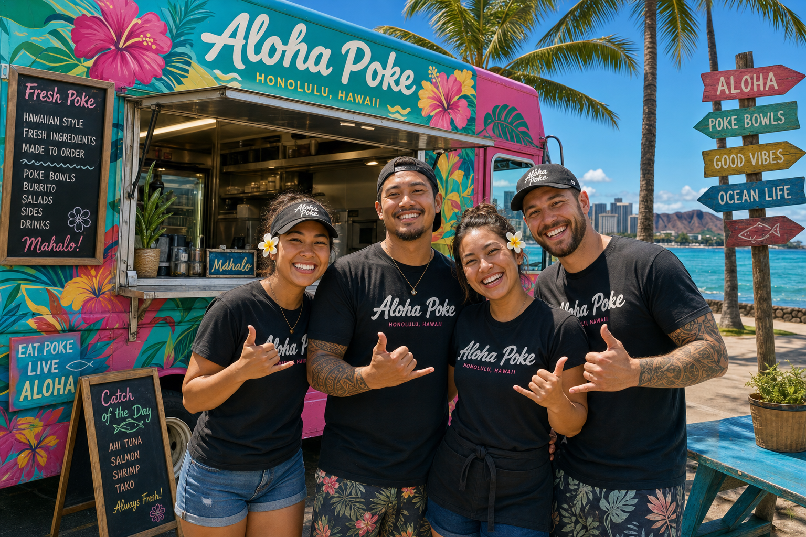

Born in Kakaako, fed by the ocean.

Poke Wave was founded by Kai Nakamura and his sister Lena, two Oahu-born fish market kids who grew up watching their father haul ahi at the Honolulu Fish Auction. When the pandemic hit and they lost their restaurant jobs, they pooled their savings and bought a truck.
Three years later, Poke Wave is one of Honolulu's most-followed food trucks with a loyal daily following at Kakaako Waterfront and a catering calendar booked months in advance.
"We want every person who eats our poke to taste what grew up eating at home — real fish, simple seasonings, and a whole lot of aloha spirit."
Kakaako Waterfront daily, Mon–Fri 10am–8pm. Look for the bright blue truck.
See Full Menu